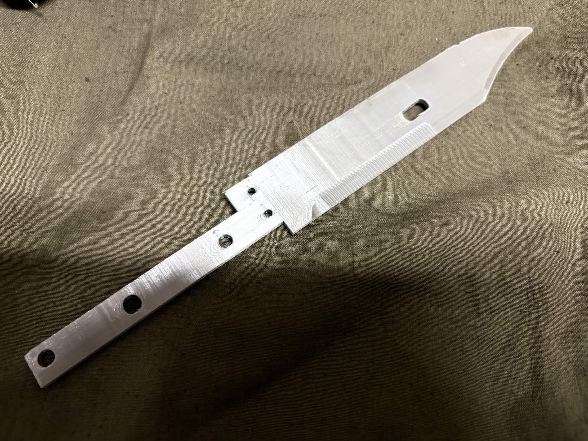

単品販売
キットのカード一覧へ戻る
シルクPLA刀身
刀身素材はPLA+またはシルクPLAから選べます。どちらも同一価格です。
ノコギリのモールドと光沢のある素材で、見栄えが大きく向上します。実物の鞘をお持ちの方にもおすすめの改造です。接着していなければ、ねじ止めを外して無加工で取り付けできます。
| 販売形態 | 単品 |
|---|---|
| 本体価格 | ¥1,000+送 |
| 素材 | シルクPLA |
| 写真 | 写真4 |